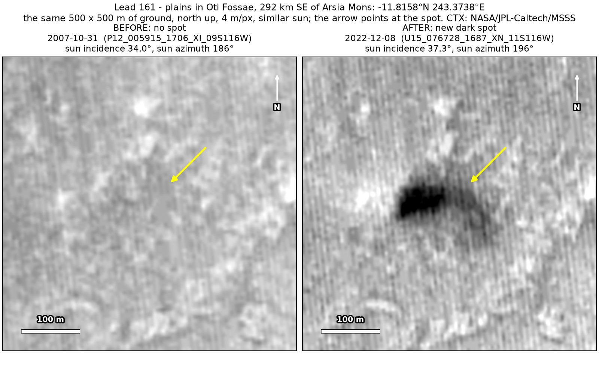
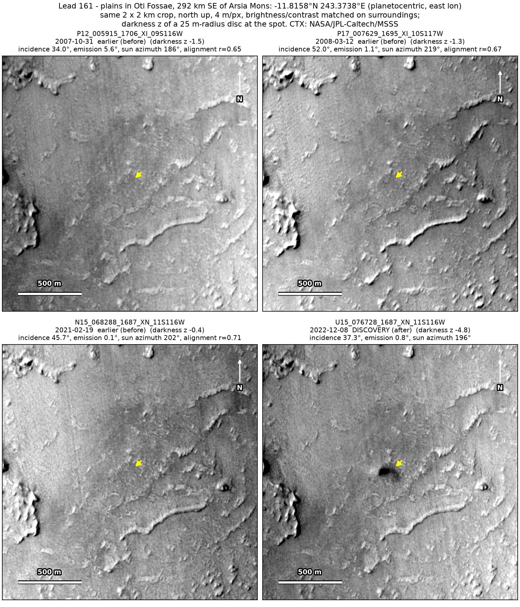
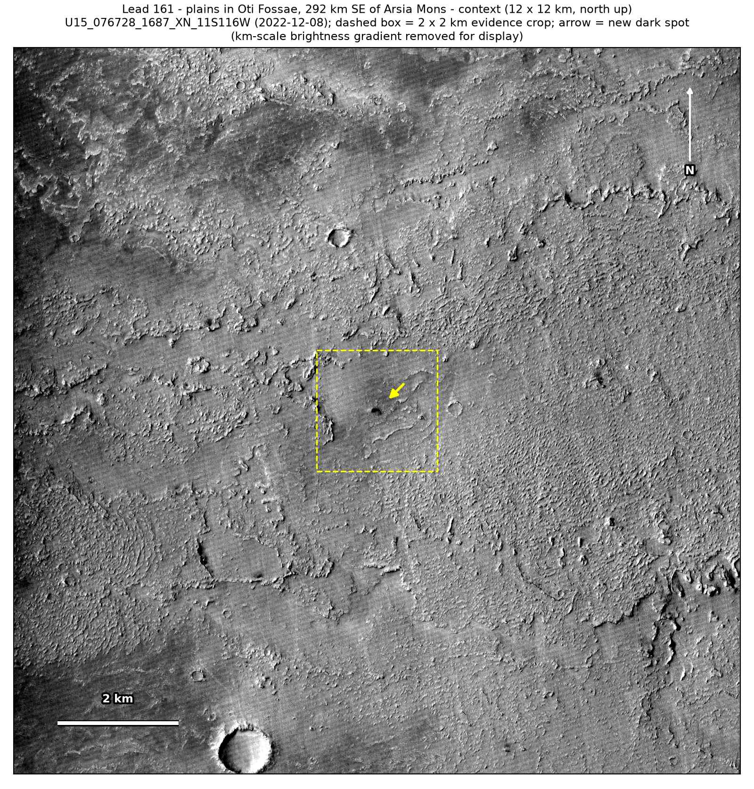

Professor of Mathematics
Paata Ivanisvili
Department of Mathematics, University of California, Irvine

← Possible new impact sites on Mars
Candidate 161: Plains in Oti Fossae, 292 km south-east of Arsia Mons
Promising · roughly 50%

What changed. A dark spot about 70 m across, darkest at its west end with a fainter tail to the east-south-east, appeared on plains among low knobs in Oti Fossae, 292 km south-east of Arsia Mons, between February 2021 and December 2022, in one CTX image.
Why it may be a new impact. Three earlier images from 2007 to 2021 show only the knobby texture there, the 2007 one under a sun only 3° higher and 10° away in direction from that of the December 2022 image, and a dark spot appearing on dusty plains is how the blast zone of a small new crater looks.
- Location
- 11.816° S, 243.374° E (116.626° W)
- Absent
- 31 October 2007, 12 March 2008 and 19 February 2021
- Present
- 8 December 2022
- Size
- Dark spot about 70 m across (90 × 60 m in the December 2022 image), with a tail to the east-south-east
- Confidence
- Promising candidate; roughly 50% that it is a new impact.
- Caveat
- Only one image shows it, so we cannot tell whether it lasts; a check against the ground nearby is inconclusive; and it is elongated along the sun’s direction and darkest at its sunward end, the shape the shadow of an active dust devil would have, although no dust column shows sunward of it. It lies outside every footprint of the high-resolution HiRISE camera; the nearest ends 15.3 km away. Like every candidate here, it is unconfirmed: see the caveat.

